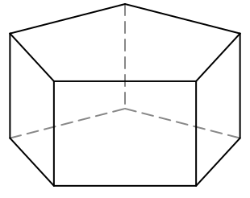

|
E11
|
- Reconnaître les solides et patrons
|
Activité Introduction
Un polyèdres est un solide dont toutes les faces sont des polygones. En voici quatre :
| Solide |
Cube |
Pyramide |
Parallélépipède rectangle |
Prisme droit |
| Représentation en perspective cavalière |
 |
|
 |
|
| Patron |
|
 |
 |
 |
| Nombres de faces |
... |
... |
... |
... |
| Nombres de sommets |
... |
... |
... |
... |
| Nombres d'arêtes |
... |
... |
... |
... |
-
Completer les trois dernières lignes du tableau.
-
On se concentre sur le cube et le parallélépipède rectangle.
-
Qu'ont-ils en commun ?
-
Quelle est la forme des faces d'un parallélépipède rectangle ?
-
Construire le patron d'un cube de côté 4cm.
Vocabulaire :
Solide :
Un
solide est un figure géométrique en trois dimensions. On utilise une
perspective pour le représenter dans le plan.
Un solide est composé de trois éléments :
- Des sommets (des points dans l'espace)
- Des arêtes (les segments qui relie deux sommets)
- Des faces (les polygones formés par les arêtes)
Remarque :
Tous les points ne sont pas des sommets et certain solide n'en ont pas (et donc aucune arêtes). Par exemple la sphère.
Perspective cavalière :
La
perspective cavalière est une représentation de solide dans le plan respectant les règles suivantes :
- La face avant est représenté en vrai grandeur.
- Les arêtes parallèles sont représenté par des segments parallèles et de même longueur.
- La profondeur représenté par des arêtes obliques et plus courte que la réalité ;
- Les arêtes cachées sont représenté en pointillé.
Exemple :


La figure ci-dessous représente le parallélépipède rectangle ABCDEFGH en perspective cavalière.
Patron :
Un patron est un dessin du plan permettant de construire un solide par découpage et pliage.
Exemple :
Le patron d'un cube est composé de six carré collé les uns aux autres.

Remarque :
- Il est possible de créer plusieurs patron différents pour un même solide.
Parallélépipède rectangle :
Pavé droit :
Un parallélépipède rectangle (aussi appelé pavé droit) est un solide composé de six faces rectangulaires.
Exemple :
ABCDEFGH est un pavé droit représenté en perspective cavalière.
Remarque :
- Les solides composés de faces polygonales sont appelés polyèdres
Cube :
Un cube est un parallélépipède rectangle particulier dont toutes les faces sont des carrés.
Exemple :

Remarque :
- Un cube a toutes ses arêtes de même longueur.